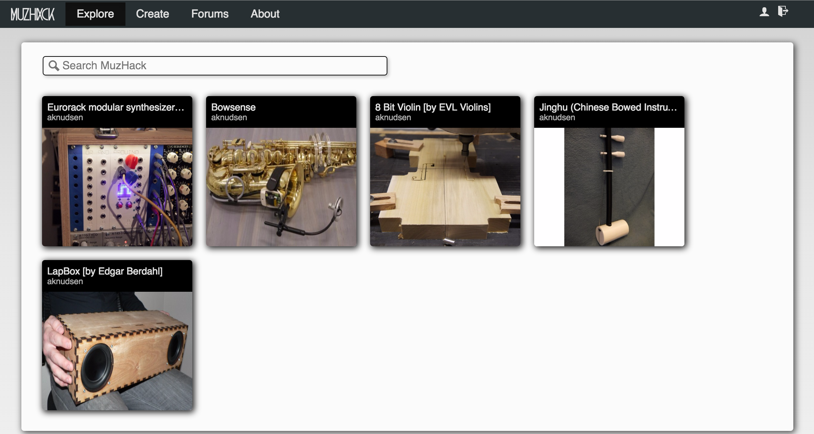

A Catalog of Music Hardware Projects
MuzHack is first and foremost a catalog of independent music hardware projects.
Sharing of Designs
The second underlying idea of MuzHack is to facilitate the sharing of music hardware designs.
Not only should people be able to find cool musical devices, they should also be able to understand how to reproduce them if they want to (and the author is prepared to share).
MuzHack is Free and Open
MuzHack is an open platform, in that anyone can join the platform (for free) and post projects to their heart's content.
This is an important principle, as it should be a platform for the community as a whole.
MuzHack is Open Source
MuzHack's source code is freely available.
As the goal is to have a collaborative, community-driven, environment around MuzHack, the source code is released under a permissive license (MIT) on the popular source code hosting service GitHub.
This should hopefully encourage useful contributions from volunteers. It also means that maintenance of MuzHack can continue even if the original developer should leave.
Projects Include Build Instructions
If the author so chooses, a MuzHack project provides user friendly instructions for how to build the hardware yourself.
Having easy instructions for building devices yourself opens for some great educational potential, as it empowers people to understand themselves how their devices work and they might even be able to customize them.
Projects Can be Imported from GitHub
In addition to the standard workflow of creating projects directly on MuzHack, through a visual interface, you have the option to import them from GitHub.
This workflow saves you from the work of having to maintain a duplicate version of your project (i.e. on MuzHack), and allows you to e.g. generate your own website from the same data. When you make changes to your GitHub repository, MuzHack automatically synchronizes the corresponding project.
Workshops
Another idea underpinning the MuzHack project is to facilitate and organize workshops.
Building stuff together with other people is just more fun!
Future Directions
- Youtube videos and sound snippets to demonstrate devices
- User friendly BOMs with links to purchase components
- Marketplace to buy components/kits/assembled products
- Social network capabilities
- Comments on projects
- Project ratings
- Ability to fork ("remix") projects
- Announcements of project related workshops
- Curated content